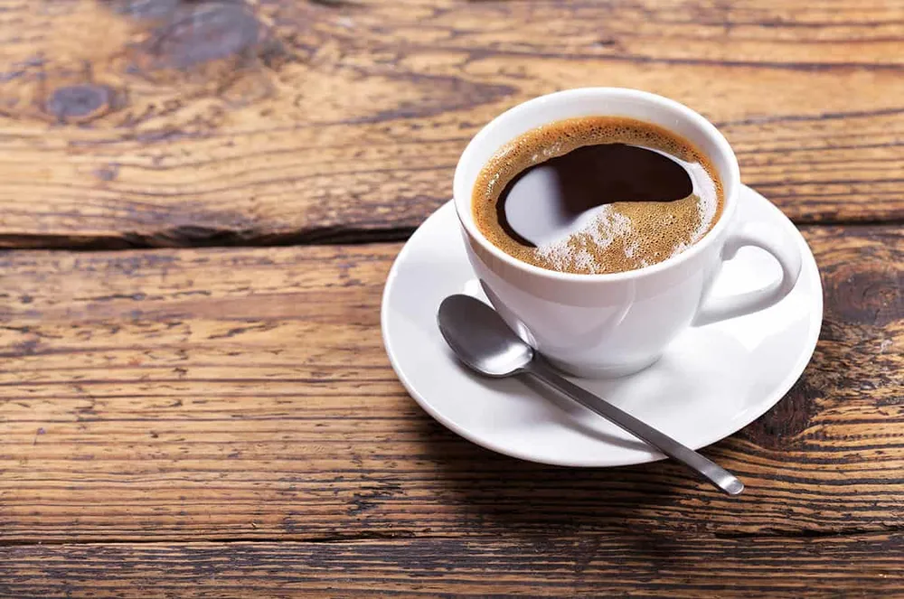

에스프레소에 뜨거운 물을 넣어서 만든 음료. 영어식 표현인 Caffé Americano라는 단어를 해석하자면 '미국식 커피'로, 미국인들이 '유럽에 비해 옅은 농도의 커피를 선호한다고 하여 '물 탄 에스프레소'를 이렇게 부르게 되었다. 다만 실제로 미국인들이 가장 선호하는 블랙커피는 배치 브루(스타벅스에서 '오늘의 커피'로 판매하는 바로 그것)이며, 아메리카노(혹은 롱 블랙)를 정말 좋아하는 나라는 한국과 호주, 중국, 그리고 영국이다. 에스프레소보다는 농도가 연하고 양이 많다는 이유로 카페 룽고(Caffé Lungo; 줄여서 룽고)와 혼동할 수 있지만, 서로 다른 커피이다.
